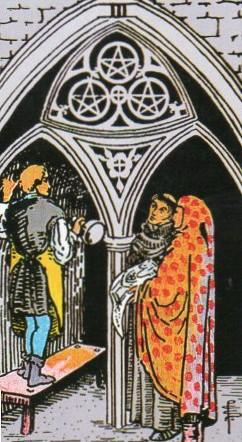
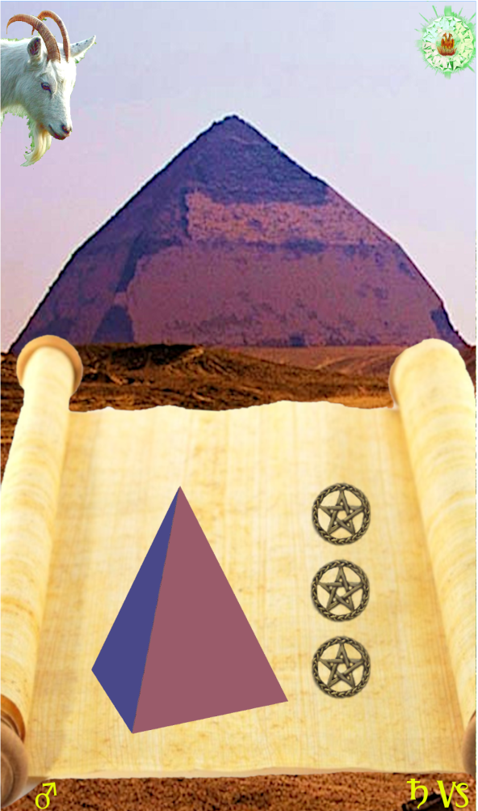
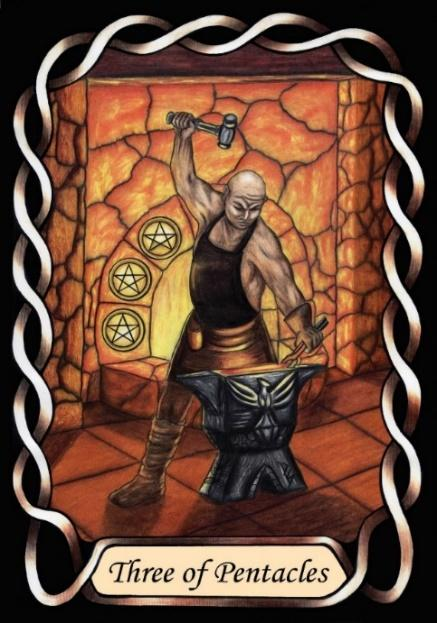

Three of Pentacles



Sign |
|
Ten: career, success |
|
Sign Ruler |
|
Element |
Earth: practical |
Modality |
|
Symbol |
Ram |
Decan |
|
Decan Ruler |
|
Time |
Jan 1 - 10 |
Umbrage Capricorn II
A Journeyman in business and career works diligently at his craft, but being ruled by Saturn and Mars, they may have difficulty dealing with customers and clients. They may think they know better, and so do the job their own way, rather than what the client wants.
Careful examination of the RWS card reveals that the monks have a plan of the work, and there appears to be a dispute that the work as done does not correspond to the plans. This shows the “Don’t tell me how to do my job” influence of Mars, taking umbrage at any criticism of their work.
Goldschneider Personology
In a context of manual work, they are meticulous, basing success on a quality of work that few others can match. Likewise, in other employment, their ambition and determination are to be recognised as the best in their field. They are intense in both career and home life, but usually do better in their careers than their personal life.
RWS Imagery
A stone mason discussing work with clients. Difficult to see, but it appears that the clients are asking the stonemason to turn the structure upside-down, a near-impossible task. The monk looks hopeful. The mason does not look impressed. This indicates the inevitable tension from the “know-it-all” attitude of a Journeyman influenced by both Mars and Saturn.
Pymander Imagery
The bent pyramid in the background compares poorly with the specifications on the papyrus scroll. The Pentacles remind us that the work was costly. The Pharaoh will not be pleased.